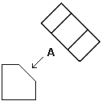
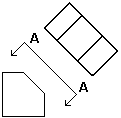
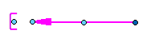
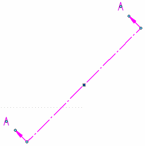

Modifying auxiliary views and view planes
After you place an auxiliary view, you can select and modify the view plane line. You also can change the captions of the view plane line and the auxiliary view.
Modifying a view plane line
You can choose the type of view plane line (single arrow or double arrow) using the View Direction Lines options on the General tab (Viewing Plane Properties dialog box).
Single-arrow view plane line:

Double-arrow view plane line:

You can edit the view plane line by dragging one of its handles.
Handles for the single-arrow view plane line:

Handles for the double-arrow view plane line:

You can:
-
Move the caption text by dragging the light blue handle at its center.
-
Freely move the view plane line in any direction by dragging the dark blue handle.
-
Lengthen and shorten a direction arrow line using the light blue handle at the tip of the arrow.
-
Drag the view plane line toward or away from the source view—For a single arrow annotation, use the light blue edit handle at the center of the view plane line. You also can drag the line itself.
For a double arrow annotation, drag the view plane line.
-
For a double arrow annotation, you also can adjust the length of the view plane using the light blue handles at either end of the view plane line. You can do the same thing by dragging either of the direction arrow lines.
Modifying captions for auxiliary views
You can control caption display and formatting separately for the auxiliary view and for the view plane line used to create it.
-
You can show or hide the view plane caption using the Show Caption button on the View Plane Selection command bar.
-
When you select a view plane line, you can use the Caption tab (Viewing Plane, Detail Envelope, Cutting Plane Properties dialog box) to specify the label letter or number and whether to display it at one or both arrows. You also can change the color and size of the label text.
-
When you select an auxiliary view, you can use the Caption tab (Drawing View Properties dialog box) to define a primary caption and a secondary caption. You also can specify their format and their location with respect to the view.
-
The default view plane caption content and formatting is defined in the Drawing View style that is applied to the auxiliary view. To learn more, see the following help topics:
How do I
Create an auxiliary viewLearn more
Auxiliary viewsLook up more details
Auxiliary View commandAuxiliary View command bar
Viewing Plane Selection command bar
Viewing Plane Properties dialog box
General tab (Viewing Plane Properties dialog box)
Caption tab (Viewing Plane, Detail Envelope, Cutting Plane Properties dialog box)